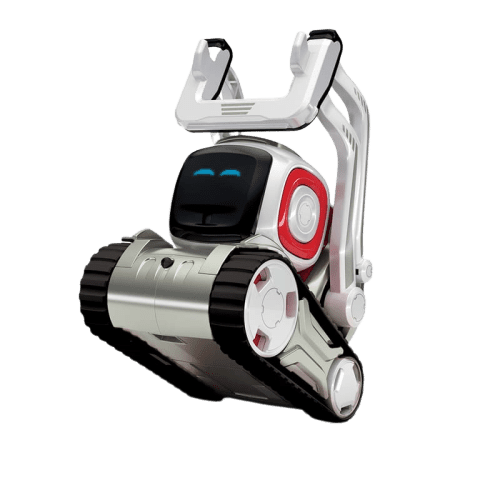

Building a toolkit for Human Agent Interaction
During eNTERFACE'19, in Ankara, Turkey, I participated in a project to create an open-source 'plug-and-play' toolkit for human-agent interaction. This project was lead by Kevin El Haddad, and also part of the team were Noë Tits and Hugp Bohy. In four weeks, we wanted to make a system from speech recognition to speech synthesis and everything in between, where people could exchange one of the components for one of their own, for example their own keyword spotting system. This would make it easy to test your system within a complete setting, and, since it should be easy to personalize, it would make it easier to build whole applications without needing to make everything from scratch. You can read about the toolkit in this paper, and find the code on Github. It is still a work-in-progress and we're constantly looking into how we can improve the system and how we can contribute more to the academic field. If you have any suggestions, or wish to collaborate on this, please let me know via email.
My contribution to the project was the Dialog Management component. Using an open-source machine-learning framework, called RASA, I built a simple dialog that helps the user find a nearby restaurant of their liking. With RASA, I could implement my own machine learning systems, work with Python, and connect it via MQTT (Kevin's part) to the Automatic Speech Recognition and Text-to-Speech components (Noë). Below is a small video demonstrating my Dialog Management component.
About eNTERFACE
For me, eNTERFACE'19 was a great experience. It is basically a yearly four week workshop, where researchers can propose projects and they can build their team via applications. Once you're there, you are with people that all want to create something new and valuable for academics or industry, plus you're in a new place around Europe where you can enjoy the culture and explore a bit. During eNTERFACE'19 I've met numerous interesting people with whom I hope to work in the future. I hope to participate many more times!